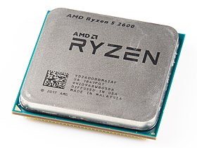
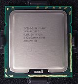
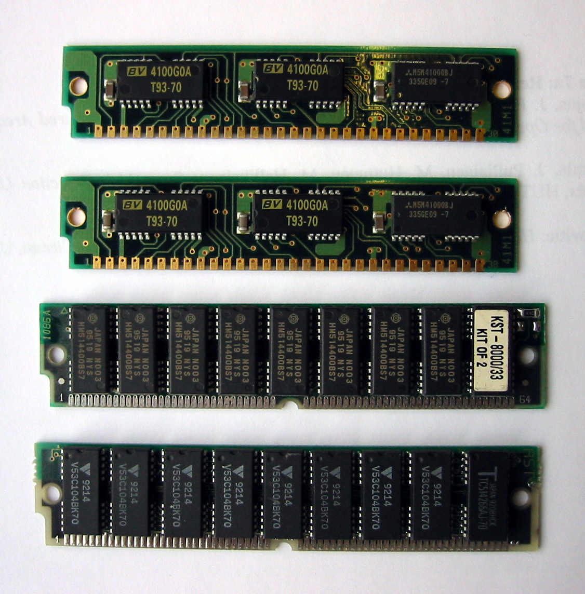
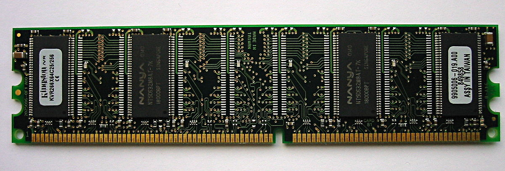
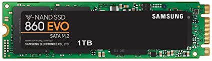
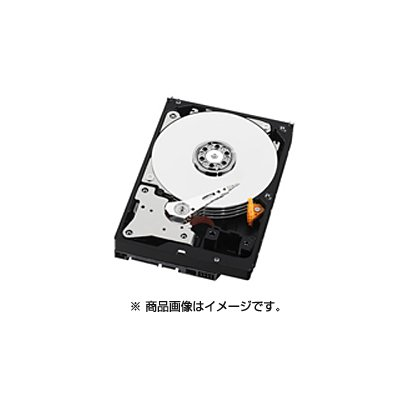

半導体製品について
Processer

Ryzen はアドバンスト・マイクロ・デバイセズ (AMD) が開発したZenアーキテクチャーを採用するAMD64マイクロプロセッサのシリーズに用いられるブランド名である。最初のRyzenは2016年12月13日のAMD New Horizon サミットで公式に発表された。

Core i7 はハイエンド向けの上位製品であり、主にメインストリーム向けにはクアッドコア / 8スレッドのラインナップとなっているが、エンスージアスト向けには10コアまでの製品がラインナップされている。
Memory Module
SIMM Module

SIMMとは、パーソナルコンピュータで RAM として使われるメモリモジュールの一種である。現在主流である DIMM とは異なり、SIMM の接点はモジュールの両面で冗長化されている。
最も初期の PC マザーボードでは、DIP チップをソケットに嵌め込むようになっていた。
DIMM Module

DIMMは、複数のDRAMチップをプリント基板上に搭載したメモリモジュールのことを指し、コンピュータの主記憶として利用される。また、そのピン配置や電気的特性を規定したDIMM規格のこと。
Storage

ソリッドステートドライブとは、半導体メモリをディスクドライブのように扱える補助記憶装置の一種である。シリコンドライブ、半導体ドライブ、メモリドライブ、擬似ディスクドライブなどとも呼ばれる。

ハードディスクドライブとは、磁性体を塗布した円盤を高速回転させ、磁気ヘッドを移動することで、情報を記録し読み出す補助記憶装置の一種である。SSDと比べ、大容量でも低価格なことが特徴。